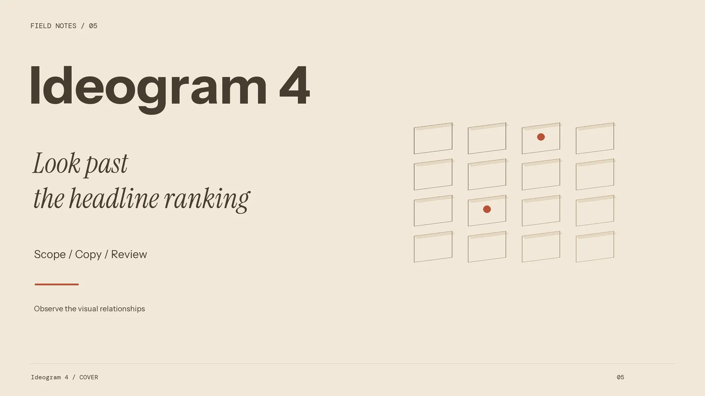
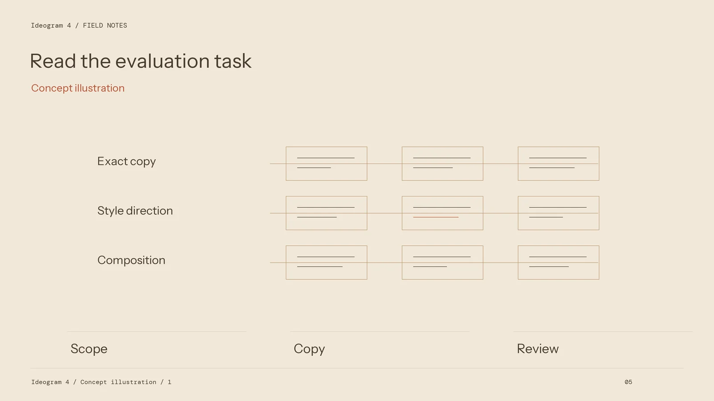
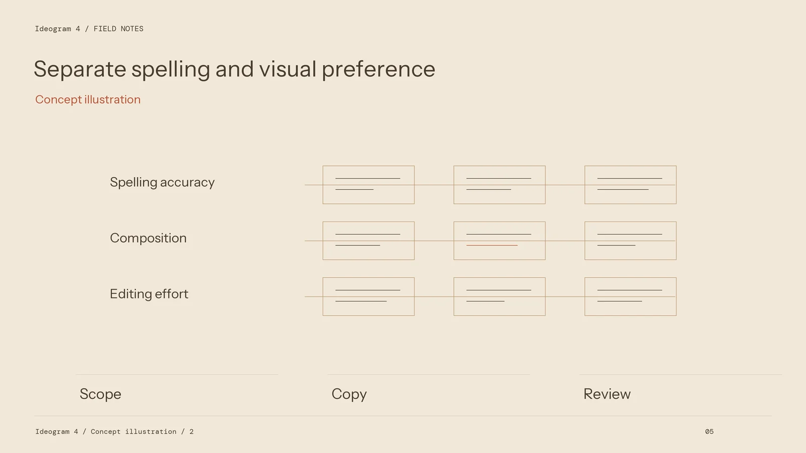

Reading Image Leaderboards Through a Typography Task with Ideogram 4

An image leaderboard answers a particular evaluation question. It may reflect voter preference, spelling recognition, layout control, or a mixture of tasks. Those are useful signals, but they are not interchangeable. A designer considering Ideogram 4 should first ask what a published score measured and how closely that test resembles the work the team needs to deliver.
Identify the evaluation before reading the position
Start with the source, publication date, model version, and test method. Distinguish a developer's own evaluation from an independent comparison and from a public preference arena. Find out whether voters saw matched prompts, whether model identities were hidden, and which settings were used. A row bearing a familiar model name can still represent a different version or route.
Read the sample distribution. A test dominated by portraits and landscapes may offer limited guidance for a poster containing an exact shop name. A typography test may focus on short English text rather than dense bilingual information. The relevant question is whether the evaluation covers the kind of wording, surface, and hierarchy your project depends on.

Keep correctness and preference separate
A misspelled headline and an unpopular colour palette are different findings. Spelling can be compared with required copy. Preference depends on the brief and the viewer. Likewise, a recognition score for text does not establish whether the title feels correctly integrated into a label, sign, or editorial cover.
For an internal review, create separate fields for exact text, reading order, subject visibility, material integration, and finishing effort. Explain what each field means before reviewing candidates. This prevents a beautiful background from silently outweighing a failed message, or a correct word from concealing a composition that cannot carry the final information.
Bring the evidence back to a small production trial
Choose a sample of actual task types: a short event poster, a product label concept, and a title-led social image, for example. Use approved or fictional copy with the same requirements across routes. Keep output format and the review process consistent. Record the actual model and settings available in the selected workspace.
Inspect candidates at their intended size as well as at a closer scale. Read every character and check whether the subtitle survives reduction. Review rejected attempts and the corrections needed to make the selected output usable. Do not count only the most attractive candidate or quietly exclude the effort required to find it.

Turn a comparison into a decision record
Summarise what was observed, with examples that show both strengths and failures. State the kinds of projects for which the route looks useful and the kinds that still need a different finishing method. Keep the source evidence alongside the trial record so that a later model or interface change can be evaluated against the same brief.
When a ranking lacks enough method detail, avoid filling the gap with assumptions. Its position can prompt a question for the trial without becoming a claim in a client proposal. The project decision should rest on the delivered asset and the review record, not on a badge copied from an unrelated evaluation.
Keep evaluation notes dated and preserve the original source page with the project record. Rankings and available model versions can change independently of an existing design brief. Revisit the comparison when the production requirement changes, rather than treating a previously useful score as a permanent procurement rule.
A workflow using Ideogram 4 can therefore be evaluated without inventing a current leaderboard position or treating a broad score as proof of commercial readiness. The useful outcome is a specific choice: what the team will try, what it will inspect, and which finishing work remains part of the production plan.